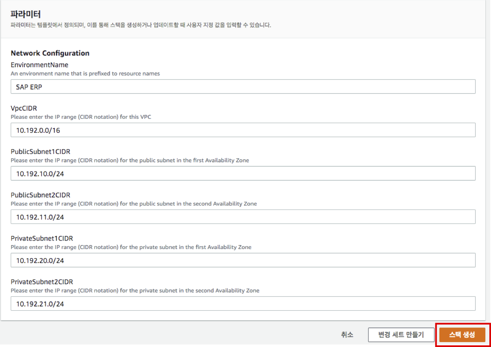
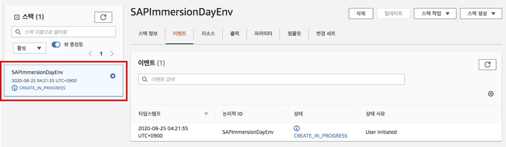
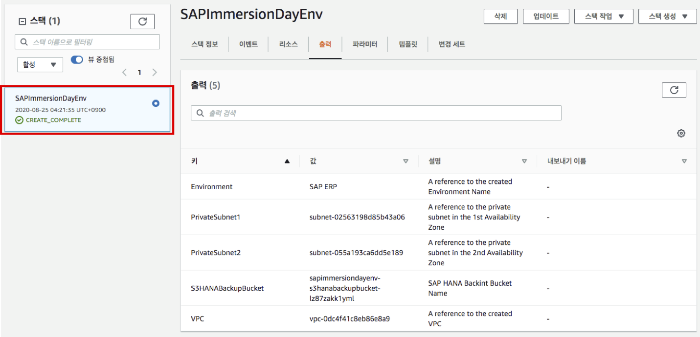
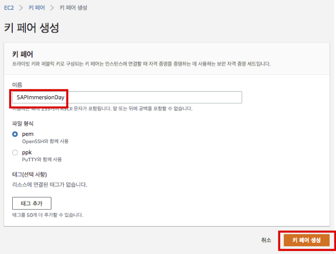

실습0. 사전 준비
Lab 설명
실습1. SAP on AWS 설치 하기 위해 필요한 VPC, Public/Private Subnet, S3, Key Pairs를 생성 및 구성합니다.
Lab Architecture

CloudFormation으로 SAP on AWS 설치 인프라 구성
Lab 전체에서 사용할 Infra를 CloudFormation 으로 생성합니다.
- AWS Management Console에 로그인 합니다. (Region : us-east-1)
- AWS Cloudformation for SAP on AWS 접속합니다.
- 기본 설정을 확인 합니다. VPC 및 Subnet CIDR이 기존에 생성되어 있는 것과 겹치지 않으면, 변경 없이 스택 생성 버튼을 누릅니다. 
- Create Stack 버튼을 누르면 아래와 같은 화면으로 리다이렉트 됩니다. Stack이 CREATE_COMPLETE 될때 까지 기다립니다.  
- 다음은 HANA EC2 인스턴스의 Key Pair 를 생성 합니다. Create Key Pairs 접속합니다.
- 키 페어 생성 버튼을 클릭하고, Name에 SAPImmersionDay 입력 후 다시 키 페어 생성 버튼을 클릭합니다. 이번 실습은 Systems Manager-Session Manager를 통해 HANA EC2 인스턴스에 접속할 예정입니다. 저장된 Key Pair는 사용하지 않을 예정입니다. 
- 실습1에서 사용할 Infra를 CloudFormation으로 생성하였습니다. 다음은 실습1 로 이동합니다.